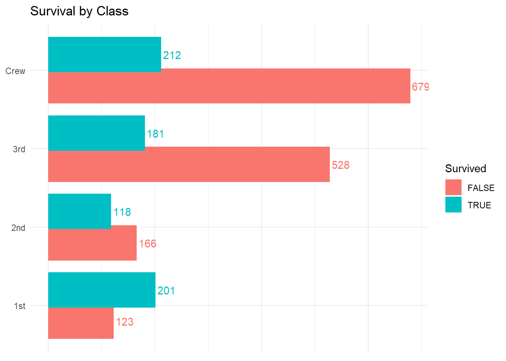
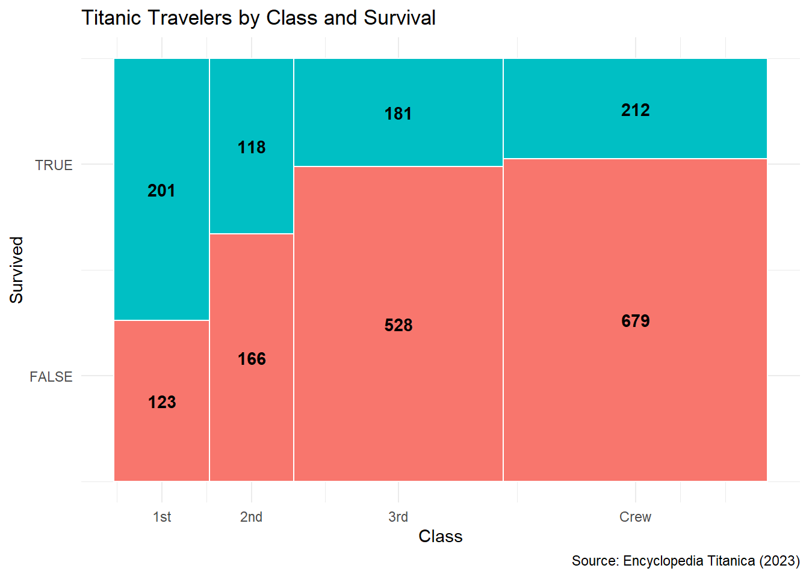
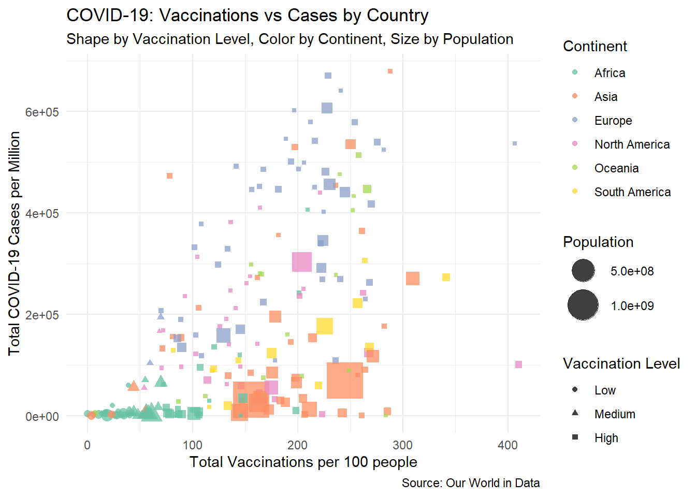

1.2 Dodged Bar Chart of Travelers by Class and Survival
titanic_survived <- titanic %>%count(class, survived)ggplot(titanic_survived, aes(x = class, y = n, fill = survived)) +geom_col(position =position_dodge(width =0.8)) +geom_text(aes(label = n, color = survived), # use 'color' aesthetic mapped to 'survived'position =position_dodge(width =0.8), hjust =-0.1) +coord_flip() +labs(title ="Survival by Class",fill ="Survived",color ="Survived" ) +theme_minimal() +theme(axis.title.x =element_blank(),axis.title.y =element_blank(),axis.text.x =element_blank(),axis.ticks =element_blank())

1.3 Mosaic Plot (Alternative: Heatmap with Matching Label Colors)
heatmap_data <- titanic %>%count(class, survived)ggplot(heatmap_data, aes(x = class, y = survived, fill = survived)) +geom_tile(color ="white") +geom_text(aes(label = n, color = survived), fontface ="bold") +labs(title ="Heatmap of Class vs Survival",fill ="Survived",color ="Survived" ) +theme_minimal()

2 Find a Data Set to Demonstrate Semantically Correct Aesthetic Mappings
a. Provide the data URL
The dataset used in this analysis is publicly available from Our World in Data:
b. Briefly summarize the scope, origin, and key variables of your data set in your own words
This dataset provides comprehensive daily COVID-19 data for countries and regions worldwide, sourced from official government and health ministry reports. It includes key variables such as the total number of COVID-19 cases per million people, total vaccinations administered per hundred people, population size, and continent information. The data is continually updated to reflect the evolving pandemic situation.
c. Use ggplot2 (and any necessary add-on package) to produce a single plot incorporating at least two out of three aesthetic mapping categories listed in Section 2.1. Choose any plot type that best illustrates your variables.
url <-"https://raw.githubusercontent.com/owid/covid-19-data/refs/heads/master/public/data/owid-covid-data.csv"covid_data <-read_csv(url)# Filter to most recent date per countrycovid_latest <- covid_data %>%group_by(location) %>%# Arrange by descending date so first non-NA row will be the most recent valid onearrange(desc(date)) %>%# Find the first row with no NAs in all relevant columnsfilter(!is.na(continent),!is.na(total_cases_per_million),!is.na(total_vaccinations_per_hundred),!is.na(population) ) %>%slice(1) %>%ungroup()# Select relevant columns and filter out NA valuescovid_plot_data <- covid_latest %>%select(location, continent, population, total_cases_per_million, total_vaccinations_per_hundred) glimpse(covid_plot_data)
ggplot(covid_latest, aes(x = total_vaccinations_per_hundred,y = total_cases_per_million,color = continent,size = population)) +geom_point(alpha =0.7) +scale_size(range =c(1, 12), guide ="legend") +labs(title ="COVID-19: Vaccinations vs Cases by Country",x ="Total Vaccinations per 100 people",y ="Total COVID-19 Cases per Million",color ="Continent",size ="Population" ) +theme_minimal()

d. For each aesthetic mapping, explain why it is appropriate, referencing the variable nature and perceptual best practices.
Color (continent): The continent variable is categorical, representing geographic regions. Using color to differentiate continents is appropriate because color is a highly effective way to visually distinguish categories, making it easier to compare regional patterns.
Size (population): Population is an extensive numeric variable indicating country size. Mapping population to point size leverages the perceptual ability to compare magnitudes through area, effectively conveying how population scale relates to vaccination and case numbers.
e. State the main insight or conclusion the reader should draw from your visualization.
The plot reveals a general trend that countries with higher vaccination rates tend to have varied case numbers, but continent-specific clusters appear—suggesting regional differences in pandemic dynamics and vaccine rollout. Additionally, larger countries (indicated by point size) show diverse pandemic outcomes, highlighting the complex relationship between population size, case counts, and vaccination coverage.